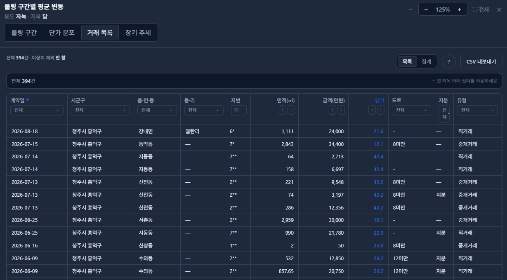

서두 · 학습목표
데이터를 읽으려면 무엇부터 알아야 할까요?
학생별 키를 정리한 표, 날짜별 기온 기록, 상품별 판매 내역은 모두 데이터입니다. 표에는 숫자뿐 아니라 이름이나 종류도 들어갑니다. 평균을 구하거나 그래프를 그리기 전에 무엇을 기록한 표인지, 각 값이 무엇을 뜻하는지부터 알아야 합니다.
이 장에서는 데이터의 기본 구조와 변수의 종류를 배웁니다. 같은 숫자라도 뜻과 단위에 따라 비교하거나 계산하는 방법이 달라집니다.
- 한 행이 나타내는 대상인 관측 단위와, 각 열에 기록한 특성인 변수를 구별합니다.
- 종류를 나타내는 범주형 변수와 크기를 나타내는 수치형 변수를 구분하고, 어떤 비교가 가능한지 알아봅니다.
- 숫자의 단위와 빈칸의 의미를 확인하고, 모르는 값을 0으로 처리하면 어떤 문제가 생기는지 이해합니다.
선수 지식은 필요하지 않습니다. 본문의 그림에는 개념과 계산을 연습하기 위한 공통 학습 예시 30건을 사용합니다.
관측 단위와 변수
한 행은 대상 하나, 한 열은 특성 하나입니다
데이터는 관찰하거나 측정한 내용을 기록한 것입니다. 이를 표로 정리하면 대개 행에는 대상이, 열에는 그 대상의 특성이 들어갑니다. 기록의 대상이 관측 단위, 대상마다 기록한 특성이 변수입니다.
학생 자료라면 한 행은 학생 한 명이고, 키·학년·통학 방법은 각각 변수입니다. 날씨 자료라면 한 행을 특정 날짜로 정하고 기온·강수량 등을 기록할 수 있습니다. 무엇을 한 행으로 정했는지에 따라 표의 의미가 달라집니다.
다음 그림은 부동산을 소재로 한 학습 예시입니다. 한 행에 구분·면적·층·단가를 기록했습니다. 각 칸의 값이 해당 관측의 어떤 특성을 나타내는지 읽어 보세요.
그림 1에서 7번 행을 읽어 보세요. 구분은 상업, 면적은 22㎡, 층은 1층, 단가는 480만원/㎡입니다. 이 값들은 같은 관측의 서로 다른 특성을 보여 줍니다. 번호는 행을 찾는 표식이므로, 번호가 크다고 면적이나 단가가 큰 것은 아닙니다.
변수의 유형
종류를 나타내는 값과 크기를 나타내는 값을 나눕니다
혈액형이나 상품 종류처럼 종류를 구분하는 값은 범주형 변수입니다. 이런 값은 더하거나 평균을 내기보다, 종류별로 몇 건인지 세고 전체에서 차지하는 비율을 구합니다. 아래 학습 예시에서는 주거와 상업이 각각 15건으로, 전체 30건의 절반씩을 차지합니다.
키·기온·판매량처럼 크기를 나타내는 값은 수치형 변수입니다. 학습 예시의 면적과 단가도 여기에 해당합니다. 값의 대소를 비교하거나 평균을 구할 수 있습니다. 수치형 변수는 다시 두 가지로 나눕니다.
- 이산형: 거래 건수처럼 하나씩 세는 값입니다. 1건과 2건 사이에 1.5건의 거래가 있는 것은 아닙니다.
- 연속형: 면적처럼 측정하는 값입니다. 측정 정밀도에 따라 84㎡, 84.2㎡, 84.23㎡로 기록할 수 있습니다. 표에 정수로 적었다고 면적이 이산형 변수가 되지는 않습니다.
층 번호도 숫자지만 해석에는 주의가 필요합니다. 지하층이나 건너뛴 층 번호가 있을 수 있고, 같은 한 층 차이라도 실제 높이는 다를 수 있습니다.
숫자로 적혔다고 모두 수치형 변수는 아닙니다. 법정동 코드는 지역을 구분하는 이름표입니다. 코드의 평균으로 지역의 특성을 설명할 수는 없습니다. 다만 주거를 1, 나머지를 0으로 표시했다면 이 열의 평균은 주거의 비율이 됩니다. 숫자의 모양보다 무엇을 기록한 값인지가 중요합니다.
측정척도
순서·차이·비율 중 무엇을 비교할 수 있을까요?
변수의 유형을 알았다면 값끼리 어떤 비교를 할 수 있는지 살펴봅니다. 용도 구분은 같은 종류인지 다른 종류인지를 비교하고, 면적은 차이뿐 아니라 몇 배인지도 비교할 수 있습니다. 이처럼 비교할 수 있는 범위를 나눈 것이 측정척도입니다.
| 척도 | 예 | 읽을 수 있는 의미 |
|---|---|---|
| 명목 | 용도 구분 | 같은 종류인지 다른 종류인지 |
| 서열 | 낮음·보통·높음 | 순서. 단계 사이의 간격은 보장되지 않음 |
| 등간 | 섭씨온도 | 차이. 20℃가 10℃보다 두 배 덥다는 뜻은 아님 |
| 비율 | 면적 | 차이와 비율. 100㎡는 50㎡의 두 배 면적 |
예를 들어 상태 등급에 1·2·3을 붙이면 순서는 알 수 있습니다. 하지만 1등급에서 2등급으로 가는 차이가 2등급에서 3등급으로 가는 차이와 같다고 볼 근거는 없습니다. 등급의 평균을 쓰려면 이 간격을 어떻게 해석할지 먼저 정해야 합니다.
처음에는 네 가지 이름을 외우기보다, 이 값으로 순서만 비교할 수 있는지, 차이나 비율도 비교할 수 있는지를 물어보면 됩니다.
단위와 자료 사전
100이라는 숫자만으로는 면적을 알 수 없습니다
면적 100이 100㎡인지 100평인지에 따라 크기는 크게 달라집니다. 단가도 만원/㎡와 만원/평은 다른 값입니다. 평균을 내거나 자료를 합치기 전에 단위를 맞춰야 합니다. 단위가 같더라도 전용면적과 연면적처럼 측정한 대상이 다를 수 있습니다.
아래 산점도는 가로축에 면적, 세로축에 단가를 놓은 그림입니다. 점 하나가 표의 한 행에 해당합니다. 각 축의 단위를 확인하면 한 관측의 면적과 단가를 함께 읽을 수 있습니다.
변수의 뜻을 모아 적은 설명서를 자료 사전이라고 합니다. 변수 이름, 무엇을 측정했는지, 단위, 허용되는 값, 빈칸의 의미를 기록합니다. ‘면적’이라고만 적기보다 ‘거래 대상 면적, 단위 ㎡, 미확인은 빈칸’처럼 써 두면 표를 읽는 사람이 같은 의미로 이해할 수 있습니다.
공통 예시 30건의 자료와 계산 확인
이 과정의 그림은 공통 학습 예시 30건을 사용합니다. 실제 거래 원천과 거래 시점, 면적 기준은 확인되지 않았으므로 특정 지역의 시장 수준을 나타내는 자료로 사용하지 않습니다.
주거 15건, 상업 15건이며 각각 15÷30=50%입니다. 면적 범위는 22~310㎡, 단가 범위는 62~480만원/㎡입니다. 산점도에는 30건을 모두 표시했습니다.
공통 예시 원자료(JSON)에서 값을 확인할 수 있습니다. 다음 절의 결측값 설명에는 별도로 만든 가상 자료를 사용합니다.
결측값과 자료 품질
빈칸은 0이라는 뜻이 아닙니다
값을 알 수 없거나 사용할 수 없어 비워 둔 것을 결측값이라고 합니다. 시험 점수가 빈칸이라고 0점을 받았다는 뜻은 아닙니다. 조사하지 못한 것인지, 입력이 빠진 것인지, 그 항목이 해당하지 않는 것인지도 구분하면 좋습니다.
단가가 100, 120, 미확인인 세 건을 생각해 보겠습니다. 확인된 두 값의 평균은 (100+120)÷2=110입니다. 미확인을 0으로 바꾸면 (100+120+0)÷3≈73.3이 됩니다. 새로운 거래를 확인한 것도 아닌데 평균이 낮아진 셈입니다.
반대로 빈칸이 있는 행을 모두 삭제하는 것도 답은 아닙니다. 특정 유형의 거래에서 값이 자주 빠진다면, 남은 자료만으로 계산한 결과는 전체와 다를 수 있습니다. 무엇이 얼마나 빠졌는지, 평균 계산에 몇 건을 썼는지 함께 확인해야 합니다.
중복도 기록의 뜻을 확인한 뒤 판단합니다. 같은 거래가 두 번 들어온 것과 서로 다른 거래의 값이 우연히 같은 것은 다릅니다. 면적과 금액이 같다는 이유만으로 행을 지우면 실제 거래를 놓칠 수 있습니다.
확인 문제
표를 읽는 기준을 점검해 보세요
- 주거를 1, 상업을 2로 기록했습니다. 평균 1.5를 ‘중간 용도’라고 읽어도 될까요?
답과 해설
아니요. 1과 2는 용도를 구분하는 표식입니다. 두 용도의 중간을 측정한 값이 아닙니다. 이 열에서는 주거와 상업의 건수나 비율을 구하는 것이 적절합니다.
- 한 건물이 두 번 거래되어 표에 두 행이 있습니다. 건물도 두 개인가요?
답과 해설
거래는 두 건이고 건물은 하나입니다. 무엇을 한 건으로 세는지에 따라 답이 달라집니다. 같은 건물의 거래끼리는 공통 특성이 있으므로 이후 통계 분석에서도 그 관계를 고려해야 합니다.
- 면적 84와 84.00은 변수 유형이 다른가요? 면적이 빈칸이면 0㎡로 읽어도 될까요?
답과 해설
표시 자릿수만 다를 뿐 면적이라는 변수의 유형은 같습니다. 빈칸은 값이 확인되지 않았다는 뜻일 수 있으므로, 실제로 0㎡라는 근거 없이 0으로 바꾸면 안 됩니다.
CH2 Macro에서 읽기
거래 목록에 배운 내용을 적용해 봅니다
아래는 CH2 Macro 토지 통계의 ‘롤링 구간별 평균 변동’ 창에서 거래 목록 탭을 연 화면입니다. 용도 ‘자녹’, 지목 ‘답’이 선택되어 있고, 전체 394건·이상치 제외 안 함으로 표시되어 있습니다.

표를 읽을 때는 다음 순서로 확인해 보세요.
- 어떤 자료인가: 창 위쪽에서 선택한 용도와 지목, 건수와 이상치 제외 여부를 확인합니다. 기간은 롤링 구간 선택 화면에서 함께 확인합니다.
- 한 행은 무엇인가: 각 행은 거래 기록 한 건입니다. 같은 날이나 같은 동의 거래가 여러 행에 나와도 서로 다른 거래일 수 있습니다.
- 각 열은 무엇인가: 계약일은 시점, 시군구·읍면동·지번은 위치를 나타냅니다. 면적·금액·단가는 크기를 비교하는 값이고, 도로·지분·거래 유형은 거래의 조건을 구분하는 정보입니다. 도로 열의 ‘8미만’처럼 숫자가 포함돼도 구간을 나타내는 분류일 수 있습니다.
- 단위와 빈칸은 무엇인가: 면적은 ㎡, 금액은 만원입니다. 첫 행의 24,000만원을 1,111㎡로 나누면 약 21.6만원/㎡로 표시된 단가와 맞습니다. ‘—’는 0이라는 뜻으로 읽지 말고 해당 열의 설명을 확인합니다.
여기서 거래를 용도지역과 지목별로 묶으면 요약표가 됩니다. 거래 목록의 한 행은 거래 기록, 요약표의 한 칸은 여러 거래를 모은 결과라는 차이를 기억하세요. 평균이나 중앙값을 읽을 때도 어떤 거래들을 묶었는지부터 확인하면 됩니다.
결론 · 학습 요약
통계값을 보기 전에 표의 뜻부터 확인하세요
이 장에서는 데이터의 구조와 변수의 종류를 살펴봤습니다. 새로운 자료를 만났을 때 다음 네 가지를 확인해 보세요.
- 관측 단위: 한 행이 사람 한 명인지, 날짜 하루인지, 집단별 집계인지 확인합니다.
- 변수의 유형: 종류를 나타내는 값은 건수와 비율로, 크기를 나타내는 값은 평균이나 분포로 살펴봅니다. 숫자 모양의 식별 코드도 구별합니다.
- 정의와 단위: 무엇을 측정했는지, 길이가 cm인지 m인지, 온도가 섭씨인지 화씨인지 확인합니다.
- 자료 품질: 빈칸을 0으로 읽지 않고, 누락과 중복 여부 및 계산에 사용한 건수를 확인합니다.
표를 읽을 수 있게 되면 다음 질문이 생깁니다. ‘지금 가진 자료만으로 관심 있는 대상 전체를 설명할 수 있을까?’ 02장 ‘모집단과 표본, 자료 수집과 편향’에서는 자료가 모인 과정이 해석에 어떤 영향을 주는지 살펴봅니다.
참고자료
- OpenStax, Introductory Statistics 2e §1.2 — 변수의 유형과 이산형·연속형 구분.
- OpenStax, Introductory Statistics 2e §1.3 — 빈도와 측정척도.
참고자료의 기존 확인일: 2026-10-07. 본문의 네 개 예제 그림은 공통 학습 자료와 별도의 결측값 예제로 작성했습니다.